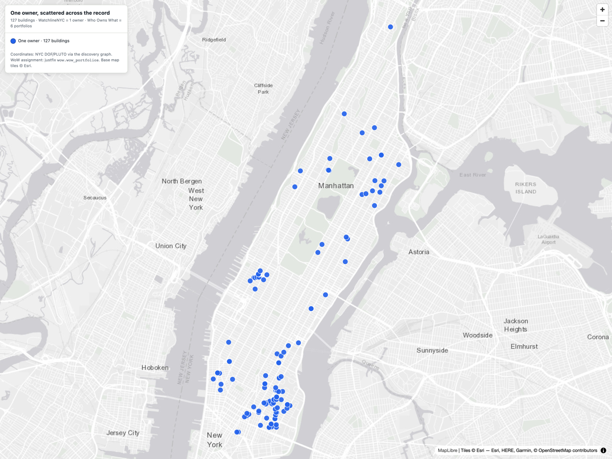

Across NYC's public records, 127 residential buildings in Manhattan — held under 115 different LLC names — resolve to a single apparent owner, Steven Croman, and are almost entirely run by his own management company. The portfolio carries 1,699 hazardous housing violations, nearly 27,000 tenant complaints, hundreds of housing-court cases, and dozens of marshal evictions. Croman was criminally convicted in 2017 and entered a record $8 million tenant-harassment settlement with the State — the accountability context this file is built to support.
The public record fragments this owner by design. Each building sits inside its own single-purpose LLC — 115 differently-named entities, almost none bearing his name — and his registrations are split across a dozen spelling and office variants. Watchline re-assembles them into one owner identity.
Ask "who owns 17 Gay Street?" and the record gives two answers, which Watchline keeps distinct and labels — plus the wider owner they roll up into:
| Layer | Answer | What it is |
|---|---|---|
| Recorded owner sourced | 17 GAY LLC | The name on the deed & registration (Dept. of Finance). A fact — but a shell that names no person. |
| Apparent controller inferred | STEVEN CROMAN | Inferred from registration/ownership linkage — a lead, not a legal determination of control. |
| Owner identity inferred | Owner group OG-105462 | The same owner across 12 registration fragments and 115 LLC names → 127 buildings. |
| Managing agent inferred | CENTENNIAL PROPERTIES NY | Self-disclosed managing agent on 114 of the 127 buildings — Croman's own firm (management ≠ ownership). |

4 WEST 51 vs 424 WEST 51).Directly-sourced enforcement records across the 127 buildings. The hazardous-violation and complaint volume is not historical residue — 1,725 HPD violations were issued in the last five years.
Ranked by hazardous (class B/C) HPD violations. Each row is a live thread for an investigator or enforcement referral. sourced
| Building | Units | Hazardous viol. | Complaints | Evictions |
|---|---|---|---|---|
| 326 East 100 Street | 92 | 234 | 1,643 | 1 |
| 354 Lenox Avenue | 18 | 87 | 680 | 1 |
| 212 East 105 Street | 24 | 64 | 466 | — |
| 15 West 103 Street | 20 | 52 | 159 | — |
| 2172 Amsterdam Avenue | 13 | 50 | 106 | 2 |
| 231 East 4 Street | 22 | 49 | 265 | 2 |
| 2100 2 Avenue | 35 | 45 | 646 | 9 |
| 314 East 106 Street | 28 | 36 | 551 | 1 |
This owner is not an unknown quantity. The State has already prosecuted and sanctioned him — context every referral should carry.
In June 2017, Steven Croman pleaded guilty to Grand Larceny in the Third Degree, Falsifying Business Records in the First Degree, and Criminal Tax Fraud. He was sentenced to one year on Rikers Island and a $5 million tax settlement. The NY Attorney General's investigation found a pattern of buying rent-stabilized buildings and moving to displace rent-stabilized tenants while refinancing. [AG, guilty plea] [AG, sentence]
A separate civil consent decree required Croman to pay $8 million into a Tenant Restitution Fund — the largest-ever monetary settlement with an individual landlord — placed 100+ properties under independent management for five years, and imposed seven years of AG monitoring. [Crain's NY]
How this was assembled. Watchline builds a knowledge graph from NYC's public record — HPD registrations, complaints & violations; DOB and ECB violations/judgments; ACRIS deeds & mortgages; and marshal evictions. A precision-first record-linkage step resolves an owner's differently-named LLCs into one owner identity; separate layers track who manages a building versus who owns it. Every element is tagged as directly sourced or inferred.
Sources.